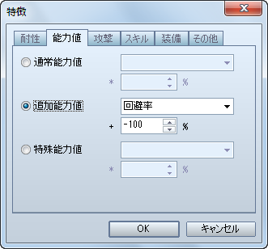
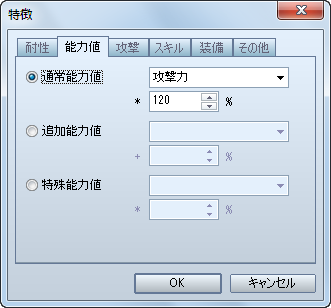
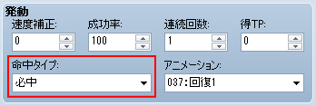

无法使用魔法关系度（VX称为精神关系度）为1以上技能的状态。
[状态]特性 - 技能 - 禁用技能类型
在 VA 中若需要设置战斗中无法输入指令、无法回避敌人攻击的状态时可以同时设置[无法行动]与[无法回避]。
[状态]基本设置 - 限制 - 无法行动

[状态]特性 - 能力 - 添加能力 - 物理闪避几率

设置攻击力等能力的变化。
[状态]特性 - 能力 - 普通能力

设置一个必中的状态，需要在技能（物品）上设置。
[技能/物品]使用 - 命中类型 - 必定命中

[技能/物品]使用效果 - 状态 - 附加状态

在 VA 中取消了这个功能。
不过可以在技能(物品)的[使用效果]中设置[能力强化/能力弱化]来得到几乎与[抵消逆向状态]同样的效果。 例如对使用过防御强化的敌人施放防御弱化的技能或物品，就会抵消防御强化，并且让敌人的数值回到强化前。

在地图中移动时或战斗回合中会减少 HP 的状态。
[状态]特性 - 能力 - 添加能力 - 体力值再生速度

设置会降低物理攻击命中率的状态。
[状态]特性 - 能力 - 添加能力 - 物理命中几率

在 VA 中可以设置解除状态需要的最短和最长的时间(回合)。也就是说可以透过调整最短与最长间的幅度设置解除的机率。

设置一个令伴随属性的攻击伤害减半的状态。
[状态]特性 - 抗性 - 属性抗性

在 VA 中取消了这个功能。